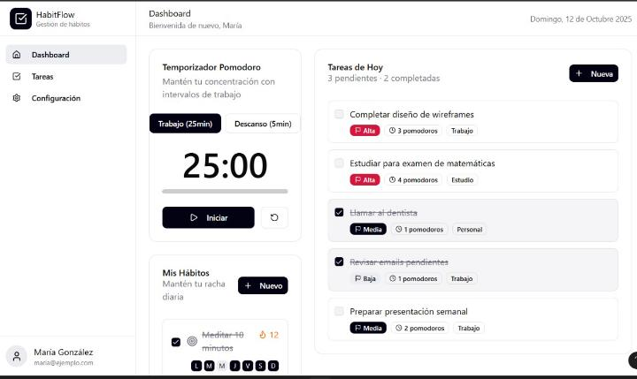
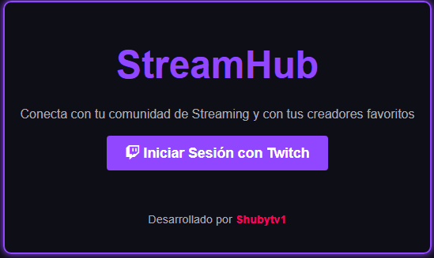

Desarrollador enfocado en el ecosistema Java/Spring Boot. Me especializo en construir el "motor" de las aplicaciones: APIs robustas, arquitecturas limpias y bases de datos optimizadas.
Mi enfoque actual es la escalabilidad y la integración de servicios de terceros (como APIs de streaming o sistemas de forja de datos). Siempre buscando el equilibrio entre código limpio y rendimiento.
Ver mi trabajo
Projecto grupal realizado en entorno educativo con actitud profesional en Skillnest con el fin de ayudar a las personas con problemas de concentración. (la pagina no fué subida)
Ver detalles →
Plataforma que une a streamer de twitch con su comunidad, permitiendoles dejar mensajes, ver clip destacados del canal, dejar comentarios por clips y proximamente implementaré una ruleta de premios.
Esta plataforma fue desarrollada con spring boot, maven project y la api de desarrollador de twitch, aplicando todos mis conocimientos de desarrollador full stack java.
Ver detalles →